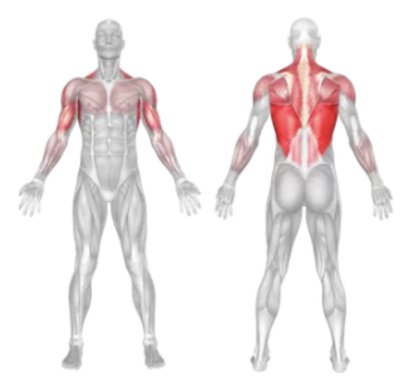
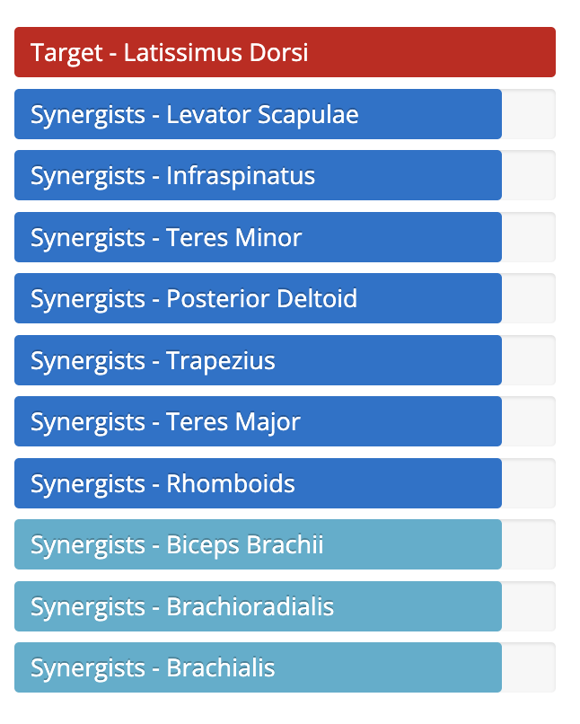

Setup
- Attach a wide bar to the high pulley of a lat pulldown machine.
- Sit down on the bench and secure your thighs under the support pads.
- Grab the bar with a **reverse (underhand) grip**, hands shoulder-width apart.
- Sit upright with your chest up and back slightly arched.
- Pull your shoulder blades down and back to engage your lats.
Execution
- Pull Down: Exhale and pull the bar down towards your upper chest using your lats and biceps.
- Squeeze: Hold for a second at the bottom and squeeze your shoulder blades together.
- Return: Inhale and slowly let the bar rise back to the starting position with control.
Tips for Effectiveness
- Don’t Lean Back Too Far: Keep a slight lean but don’t use momentum.
- Controlled Movement: Avoid jerky or fast reps to maximize muscle engagement.
- Elbow Path: Keep elbows close to your sides as you pull down.
- Full Range: Stretch fully at the top and contract completely at the bottom.
Benefits of Reverse Pulldown
- Lat Development: Helps in building a wider and stronger back.
- Increased Bicep Activation: The underhand grip adds secondary bicep involvement.
- Improved Posture: Strengthens muscles that help pull your shoulders back.
- Pull-Up Progression: Assists in training for underhand (chin-up) style pull-ups.
Muscles Worked in Reverse Pulldown

